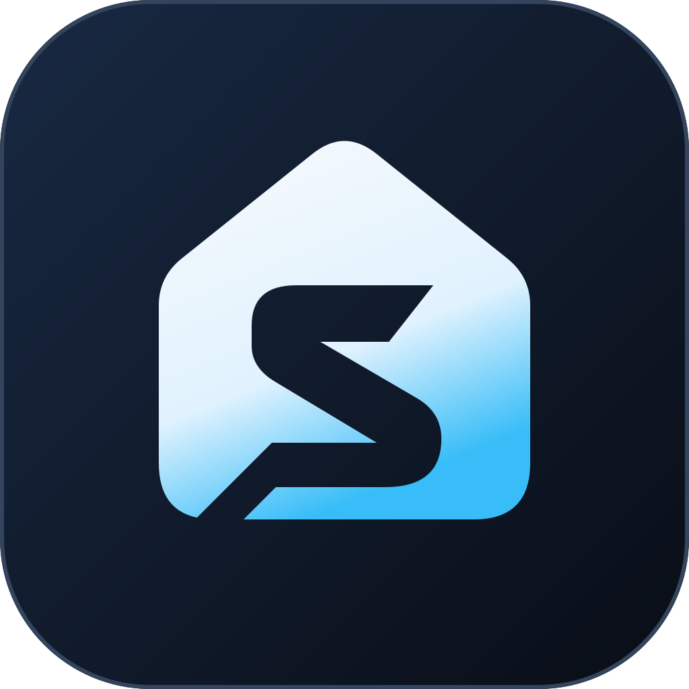
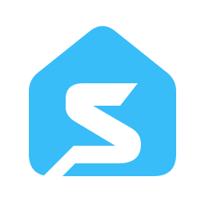
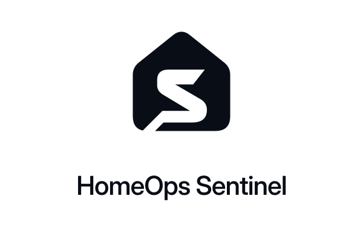
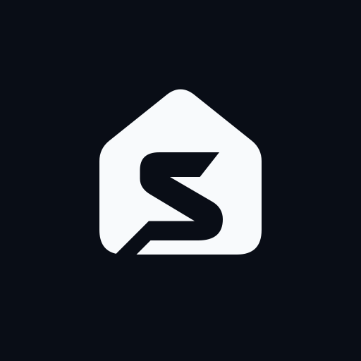
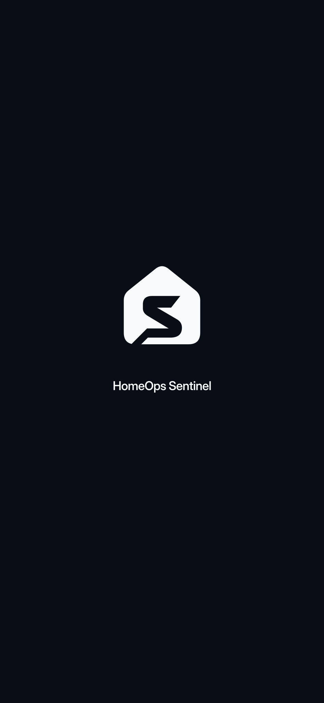
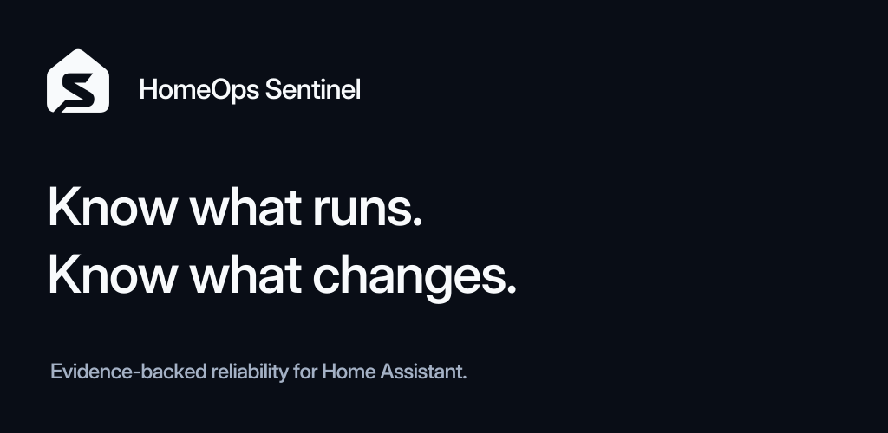

One identity.
Ready to build on.
The original home-and-S signature in obsidian, white, and cyan. A complete, editable library for the app and its communications.
Download the full brand kitIdentity approved October 15 · Assets updated October 16, 2026 · SVG, PNG, ICO, fonts & templates

The signature.
One-color masters and outlined wordmarks. Transparent paths, no masks or font dependencies.








Keep the supplied proportions. Use a minimum 24px symbol in normal UI and clear space of one eighth of the symbol canvas. Full usage guidance.
Every entry point.
Square native source, rounded presentation, maskable web artwork, and small browser identities.
App icon
Opaque square source: 32–1024px PNG exports. Rounded tile supplied separately.



Web & touch
Maskable 512px, any-purpose 192/512px, and 180px Apple touch icon.


Browser identity
SVG favicon, 16/32/48px PNGs, multi-size ICO, and monochrome pinned tab.


Ready for platform handoff.
New in v1.1: adaptive layers, monochrome artwork, launch identity, and a store feature image.

Adaptive & monochrome
Separate foreground and slate background. Conservative central placement for launcher masking.



Launch identity
Transparent foreground and a portrait composition reference, not a native-build screenshot.



Feature artwork / 1024 × 500
Outlined SVG and opaque PNG. Verify actual platform crops and submission requirements.


The visual system.
Restrained brand color. Separate semantic states. Readable type, locally hosted.
Canvas#090D16
Surface#0F172A
White#F8FAFC
Cyan#38BDF8
Secondary#A4B1C5
Structure#34445C
Inter / UI & identity
Clarity is a
form of care.
Regular · Medium · Semibold
Bundled variable font, with its open font license.
System mono / evidence
snapshot_id: DEMO-024
validation: not_run
Use monospace for paths, IDs, code, and timestamps. Evidence states always include words.
Beyond the app.
Outlined social artwork and editable report and communication templates.


Artwork is prepared locally. Public hosting and publication remain separate steps.
Templates & handoff

One source of truth.
This kit supersedes earlier logo explorations. The existing app now uses the approved mark, theme, local font, favicons, and sharing artwork.